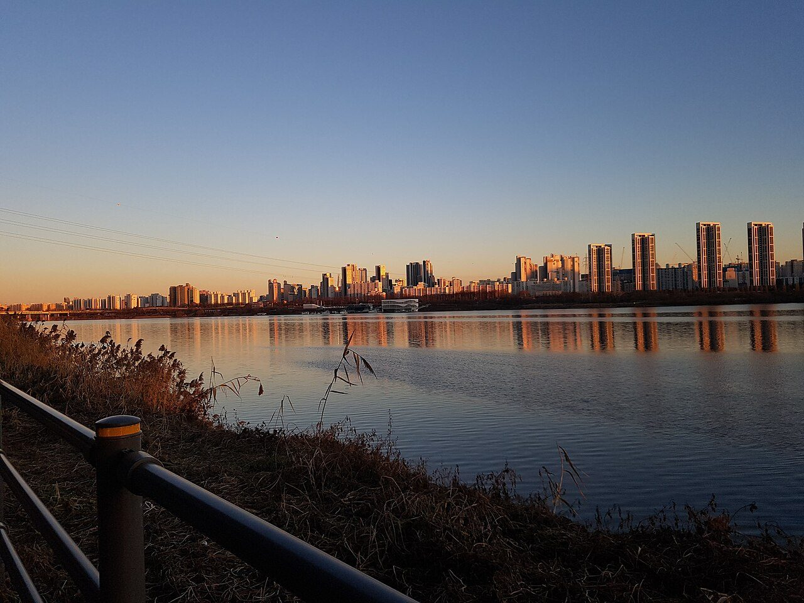
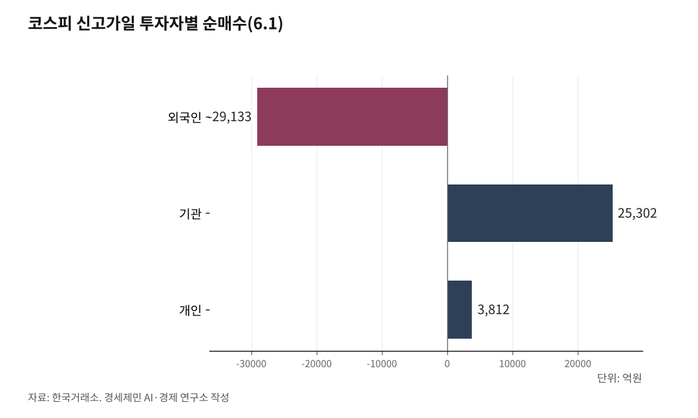

[코스피 9000 코앞 ①] 시민이 물꼬 튼 성장, 왜 남일 같을까
정치 불확실성 풀리자 돌아온 외국인, 상법 개정과 사상 최대 수출이 신고가 떠받쳤다
신고가 쓴 6월 1일, 오른 종목 179개 내린 종목 732개… 다섯 중 넷이 빠졌다
시민이 물꼬 텄지만, 열매는 자산 쥔 소수가 가져갔다
AI경세제민=김갑봉 기자 | 코스피가 6월 1일 8788.38로 또 사상 최고치를 썼다. 장중에는 8874.16까지 올라 9000선이 눈앞이다. 1년 전 3000선에서 한 해 만에 거의 세 배로 뛰었다.

이 상승의 뿌리를 캐 보면 끝에 시민이 있다. 2024년 겨울 광장을 채운 빛, 빛의 혁명이 만든 정치적 안정이 출발점이다. 그런데 그 혁명을 일군 시민에게 9000 눈앞의 코스피는 남의 잔치다.
빛의 혁명이 연 문, 시민이 끼운 첫 단추
경제가 가장 싫어하는 것이 불확실성이다. 2024년 12월 계엄 사태로 정치 위험이 정점으로 치솟았다. 시민은 광장에서 이를 끌어내렸다.
윤석열 전 대통령은 탄핵과 파면을 거쳤다. 2025년 6월 대통령 선거로 정권이 바뀌었다. 시민의 손으로 불확실성을 걷어냈다.
효과는 지표로 나타났다. 한국은행 소비자심리지수는 2025년 5월 101.8로 한 달 새 8.0포인트 뛰었다. 떠나 있던 외국인도 순매수로 돌아서며 지수를 끌어올렸다.
외국인의 매매는 지수에 가장 큰 영향을 미친다. 대형주를 집중적으로, 꾸준히 사들이기 때문이다. 외국인이 돌아온 시점은 정권 교체기와 정확히 겹친다.
코스피 신고가의 첫 단추는 광장의 시민이 끼웠다.

상법 세 차례 개정, 헐값 딱지를 뗐다
돌아온 돈을 붙잡은 것은 제도 개혁이다. 혁명으로 들어선 정부는 상법을 세 차례 고쳐 기업 지배구조를 손봤다.
1차 개정은 이사의 충실의무 대상에 주주를 더했다. 이사가 전체 주주의 이익을 공평하게 대우하도록 못 박았다. 유예 없이 2025년 7월 곧바로 시행됐다.
사외이사 명칭을 독립이사로 바꾸고 의무 선임 비율을 이사 총수의 4분의 1에서 3분의 1로 높였다. 감사위원을 뽑을 때 최대주주 의결권을 3%로 묶는 규정도 강화했다.
2차 개정안은 2025년 8월 25일 국회를 통과했다. 집중투표제 의무화와 감사위원 분리선출 확대를 담아 지배주주의 이사회 장악을 견제했다.
3차 개정안은 2025년 11월 발의됐다. 회사가 사들인 자기 주식을 강제로 없애는 자사주 의무 소각이 골자다. 주주 몫을 키우는 장치다.
한국 증시가 저평가받은 핵심 이유가 지배구조다. 물적분할과 쪼개기 상장으로 우량 회사가 껍데기만 남는다는 불신이 깊었다. 세 차례 개정이 그 불신을 정조준했다.
정부가 2024년 도입한 밸류업(기업가치 제고) 프로그램도 상법 개정과 맞물려 힘을 받았다. 장부가치에도 못 미치던 한국 주식이 제값을 찾기 시작했다. 코리아 디스카운트(한국 증시 저평가)라는 헐값 딱지가 떨어졌다.
사상 최대 수출이라는 실체
정치와 제도가 돈이 들어올 문을 열었다. 수출은 그 안에서 살 실체를 만들었다. 수출이 늘면 기업 이익이 불어나고, 그 이익이 주가를 밀어 올린다.
2025년 수출은 7097억 달러(약 1000조원)로 사상 처음 7000억 달러를 넘었다. 역대 최대다. 무역수지는 780억 달러(약 110조원) 흑자로 2017년 이후 가장 컸다.
반도체 수출은 1734억 달러(약 250조원)로 한 해 전보다 22.2% 늘어 역대 최대를 썼다. 자동차도 720억 달러(약 100조원)로 역대 최대를 다시 썼다.
2026년 들어 속도가 더 붙었다. 5월 1~20일 반도체 수출이 한 해 전보다 202.1% 폭증하며 같은 기간 역대 최대를 기록했다. 한국개발연구원은 반도체 급증을 이유로 올해 성장률 전망치를 1.9%에서 2.5%로 올렸다.
이 실체도 시민의 노동이 만들었다. 반도체 라인과 조선소 도크, 자동차 공장에서 흘린 노동자의 땀이 7097억 달러의 바탕이다. 호황의 엔진은 인공지능 데이터센터 수요로 값이 뛴 메모리 반도체다.
신고가의 그늘, 다섯 중 넷이 떨어졌다
화려한 지수에는 그늘이 있다. 6월 1일 코스피는 312.23포인트(3.68%) 오른 8788.38로 마감했다. 그날 오른 종목은 179개, 내린 종목은 732개였다.
신고가를 쓴 날, 다섯 종목 중 넷이 떨어졌다. 소수 대형주가 지수를 끌어올리는 사이 대부분의 종목은 빠졌다.
수급도 한쪽으로 쏠렸다. 그날 외국인은 2조9133억원을 순매도했고, 기관이 2조5302억원을 받아 지수를 떠받쳤다. 개인은 3812억원을 순매수했고, 거래대금은 69조원을 넘었다.
품목 쏠림도 깊다. 5월 1~20일 전체 수출에서 반도체가 차지하는 비중이 41.7%까지 치솟았다. 전체 수출의 40%를 한 품목이 가져간 셈이다.
지수도, 수출도 소수 대형 반도체주가 떠받친다. 나머지는 신고가 잔치에서 빠진다.
열매는 임금이 아니라 자산으로 흘렀다
시민이 성장의 물꼬를 텄는데 열매가 남 일처럼 느껴지는 까닭은 그 열매가 흘러간 길에 있다. 신고가의 이익은 임금이 아니라 자산으로 흐른다. 주식과 부동산을 가진 사람은 지수가 오르면 자산이 불어나지만, 임금만 받는 사람의 통장에는 그 이익이 닿지 않는다.
문제는 그 자산이 한쪽에 쏠려 있다는 점이다. 2025년 3월 말 상위 10% 가구가 전체 순자산의 46.1%를 쥐고 있다. 하위 50% 가구가 나눠 가진 몫은 9.1%에 그친다.
자산 불평등을 보여주는 순자산 지니계수는 0.625로, 2012년 통계 작성 이후 가장 높다. 신고가의 열매가 자산을 따라 흐르는 한, 그 열매는 상위 10%에게 먼저 쌓인다. 자산을 가진 쪽과 임금만 받는 쪽의 거리가 그만큼 멀어진다.
토마 피케티는 자본수익률이 경제성장률을 웃돌면 이 격차가 계속 벌어진다고 했다. 코스피가 한 해 만에 세 배로 뛰는 동안, 임금은 그 속도를 따라가지 못했다. 일해서 버는 돈보다 가진 자산이 불어나는 속도가 빨랐다.
6월 1일 신고가를 쓴 그날, 외국인은 2조9133억원어치를 팔고 떠났다. 싸게 사서 비싸게 판 외국인이 재평가의 과실을 가장 크게 챙겼다. 디스카운트를 푼 주역은 시민인데, 열매는 자산을 쥔 소수와 떠나는 외국인이 가져갔다.
시민이 물꼬를 텄지만 손에 쥔 것은 없다. 그래서 9000 눈앞의 신고가가 시민에게는 남 일처럼 느껴진다.
[다음 편] ② 위기 속에 더 오른 증시. 미국·이란 전쟁과 고유가 속에서도 코스피가 오른 비밀, 디커플링과 에너지 외교를 짚는다.
※ 이 기사는 인공지능 프로그램 클로드 오푸스 4.8을 활용해 작성했다.
참고문헌
· "2025년 수출 7097억달러…흑자·반도체·자동차 '역대 최대'", 머니투데이, 2026.1.1., https://www.mt.co.kr/economy/2026/01/01/2026010109121092166
· "'또 역대급' 반도체 202%↑…5월 중순 수출 527억 달러", 머니투데이, 2026.5.21., https://www.mt.co.kr/economy/2026/05/21/2026052108385010415
· "2026 상반기 경제전망", 한국개발연구원, 2026.5.
· "2025. 9. 9.자 개정 상법 공포 및 추가 입법 동향", 김·장 법률사무소, 2025.9.
· "상법 개정 반색한 로펌들, 자사주 소각 특수는 불투명", 인베스트조선, 2025.11.28., https://www.investchosun.com/site/data/html_dir/2025/11/28/2025112880160.html
· "2025년 5월 소비자동향조사 결과", 한국은행, 2025.5.27.
· "2025년 가계금융복지조사 결과", 국가데이터처·한국은행·금융감독원, 2025.12.4.
· "코스피 주요시세(2026.6.1. 장마감)", 한국거래소
· 토마 피케티, 『21세기 자본』, 2013.
사진 출처
· [대표사진] SpaceshipMe, "Seocho-gu Skyline from Han River — Dec 2023.jpg", 위키미디어 공용, CC0, https://commons.wikimedia.org/wiki/File:Seocho-gu_Skyline_from_Han_River_%E2%80%94_Dec_2023.jpg
※ 이 브리핑은 인공지능을 활용해 작성했습니다.
관련기사
저작권자 © AI경세제민 무단전재 및 재배포, AI학습 및 활용 금지